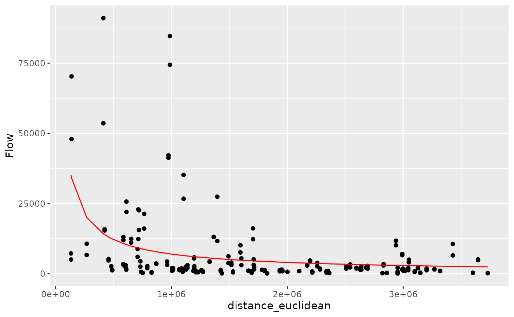
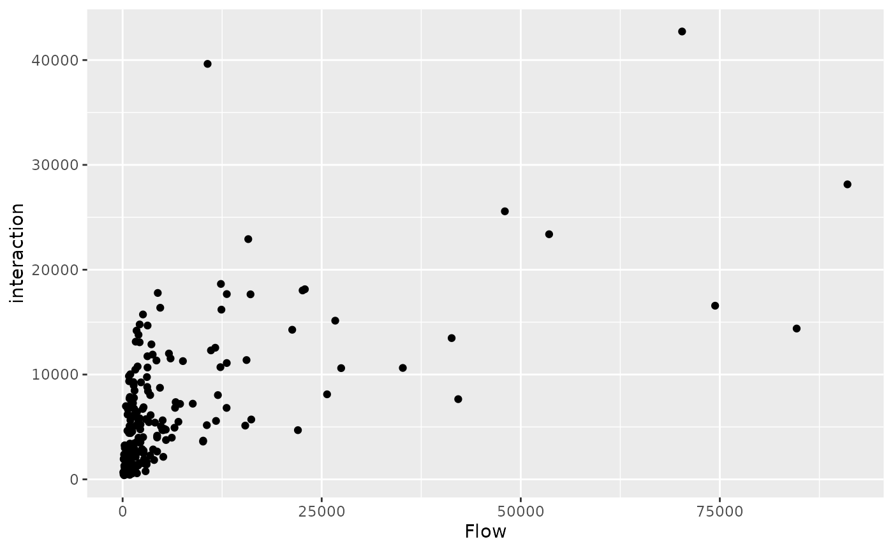

Prerequisites
You need to have installed R and a suitable editor such as RStudio or VSCode with R plugin. See the package’s README for instructions on installing the {simodels} package.
Input data
This tutorial builds on a reproducible guide to SIMs in R (Dennett 2018). We start by importing open access data representing movement between zones in Australia (thanks to Adam Dennett for making the files accessible):
u1 = "https://github.com/Robinlovelace/simodels/releases/download/0.0.1/zones_aus.geojson"
zones_aus = sf::read_sf(u1)
u2 = "https://www.dropbox.com/s/wi3zxlq5pff1yda/AusMig2011.csv?raw=1"
od_aus = read.csv(u2)Let’s take a quick look at and ‘minimize’ these input datasets before modelling them with SIMs:
dim(zones_aus)
#> [1] 15 7
names(zones_aus)
#> [1] "GCCSA_CODE" "GCC_CODE16" "GCCSA_NAME" "STATE_CODE" "STATE_NAME"
#> [6] "AREA_SQKM" "geometry"
key_zone_names = c("GCCSA_CODE", "GCCSA_NAME", "AREA_SQKM")
zones = zones_aus[key_zone_names]
head(zones, 2)
#> Simple feature collection with 2 features and 3 fields
#> Geometry type: MULTIPOLYGON
#> Dimension: XY
#> Bounding box: xmin: 140.9993 ymin: -37.50503 xmax: 153.6298 ymax: -28.16441
#> Geodetic CRS: GDA94
#> # A tibble: 2 × 4
#> GCCSA_CODE GCCSA_NAME AREA_SQKM geometry
#> <chr> <chr> <dbl> <MULTIPOLYGON [°]>
#> 1 1RNSW Rest of NSW 788443. (((153.008 -28.34026, 153.11 -28.35709, 1…
#> 2 1GSYD Greater Sydney 12368. (((151.5961 -33.16168, 151.6305 -33.17709…
dim(od_aus)
#> [1] 225 13
names(od_aus)
#> [1] "Origin" "Orig_code" "Destination" "Dest_code"
#> [5] "Flow" "vi1_origpop" "wj1_destpop" "vi2_origunemp"
#> [9] "wj2_destunemp" "vi3_origmedinc" "wj3_destmedinc" "vi4_origpctrent"
#> [13] "wj4_destpctrent"
key_od_names = c("Orig_code", "Dest_code", "Flow")
od = od_aus[key_od_names]
head(od, 2)
#> Orig_code Dest_code Flow
#> 1 1GSYD 1GSYD 3395015
#> 2 1GSYD 1RNSW 91031The results printed above show that:
zones_ausrepresents the 15 regions of Australia, with columns containing zone identifiers (IDs), primarilyGCCSA_CODE, and the area of each zone (AREA_SQKM). The minimalzonesobject contains only the region code, name, and area.od_auscontains 225 rows of data representing the movement of people between the zones inaus. Note that 255 is 15 squared, meaning that this OD dataset contains the complete combination of migration flows, starting with zone1GSYDto1GSYD. These codes are present in theGCCSA_CODEcolumn in theausobject. The first row of the OD dataset represents ‘intra-zonal’ migrations in Greater Sydney, presumably counting the number of people who move house from somewhere in the region to another home in the region. There are 13 columns in this dataset, the most important of which areOrig_code,Dest_code, andFlow, which we have captured in the minimaloddataset.
Note: a useful convention with ‘long form’ OD datasets is for the first two columns to contain zone IDs that correspond to values in the first column of the zone dataset. The R package {od}, on which {simodels} builds, assumes that inputs to its functions are in this form.
It is a good idea to verify that the origin and destination codes in the od dataset match the zone codes in zones:
summary(od[[1]] %in% zones[[1]])
#> Mode TRUE
#> logical 225
summary(od[[2]] %in% zones[[1]])
#> Mode TRUE
#> logical 225It is clear from the above that we have ‘clean’ input datasets, let’s begin with the modelling!
Preparing a SIM
Key to the workings of the {simodels} package is the conversion of geographic objects representing origins and destinations into an OD dataset. In this case, we already have an OD dataset, so this step is less relevant. However, we will take this step in any case because many SIMs start without such a comprehensive OD dataset as we have in this case.
Prepare the OD dataset as follows:
od_sim = si_to_od(origins = zones, destinations = zones)
#> Maximum distance is > 100km. The 'cheap' measure is inaccurate over such
#> large distances, you'd likely be better using a different 'measure'.
names(od_sim)
#> [1] "O" "D" "distance_euclidean"
#> [4] "origin_GCCSA_NAME" "origin_AREA_SQKM" "destination_GCCSA_NAME"
#> [7] "destination_AREA_SQKM" "geometry"Note that the output has duplicate columns: si_to_od() joins data from the origin and destination objects into the resulting OD object.
An unconstrained SIM
A simplistic SIM - in this case an inverse power distance decay function (negative exponential is another commonly used decay function) - can be created just based on the distance between points:
si_power = function(d, beta) (d / 1000)^beta
od_calculated = si_calculate(
od_sim,
fun = si_power,
d = distance_euclidean,
beta = -0.8
)
plot(od_calculated["interaction"], logz = TRUE)
#> Warning in classInt::classIntervals(v0, min(nbreaks, n.unq), breaks, warnSmallN
#> = FALSE): var has infinite values, omitted in finding classes
This approach, ignoring all variables at the level of trip origins and destinations, results in flow estimates with no units. Before learning how to run constrained SIMs, let’s scale the result by the total flow and see how far we are from reality, just focussing on the interzonal OD pairs:
od_interzonal = od %>%
filter(Orig_code != Dest_code)
od_calculated_interzonal = od_calculated %>%
filter(O != D)
scale_factor = sum(od_interzonal$Flow) /
sum(od_calculated_interzonal$interaction)
od_calculated_interzonal = od_calculated_interzonal %>%
mutate(interaction_scaled = interaction * scale_factor)
od_joined = inner_join(
od_calculated_interzonal,
od %>% rename(O = Orig_code, D = Dest_code)
)
#> Joining, by = c("O", "D")
od_joined %>%
ggplot() +
geom_point(aes(Flow, interaction_scaled))
cor(od_joined$Flow, od_joined$interaction_scaled)^2
#> [1] 0.1677679The results show that a simple unconstrained model, without any parameter fitting, can explain less than 20% of the variability in flows. We can do better!
od_joined %>%
mutate(decay = distance_euclidean^-0.8) %>%
mutate(decay = decay * (sum(Flow) / sum(decay))) %>%
ggplot() +
geom_point(aes(distance_euclidean, Flow)) +
geom_line(aes(distance_euclidean, decay), colour = "red") 
A production constrained SIM
The first logical way to improve model fit is to run a production constrained model. To do that, we’ll first calculate the total number of people leaving each zone and then use the constraint_production argument:
od_originating = od_joined %>%
group_by(O) %>%
mutate(originating_per_zone = sum(Flow)) %>%
ungroup()
od_constrained_p = si_calculate(
od_originating,
fun = si_power,
d = distance_euclidean,
beta = -0.8,
constraint_production = originating_per_zone
)
od_constrained_p %>%
ggplot() +
geom_point(aes(Flow, interaction))
cor(od_constrained_p$Flow, od_constrained_p$interaction)^2
#> [1] 0.3891644Progress! We have more than doubled the predictive ability of our model by using a ‘production constrained’ SIM, as defined mathematically in the simodels-first-principles vignette.
Training a SIM
An advantage of the flow data used in this example is that we already know the interaction. (This raises the question of why a SIM is needed, answer: to test our models and demonstrate the techniques.)
We can do this using the nls() function as follows:
library(minpack.lm)
f = Flow ~ a * (distance_euclidean)^b
m = nlsLM(
formula = f,
data = od_originating,
)
#> Warning in nlsLM(formula = f, data = od_originating, ): No starting values specified for some parameters.
#> Initializing 'a', 'b' to '1.'.
#> Consider specifying 'start' or using a selfStart model
#> Warning in nls.lm(par = start, fn = FCT, jac = jac, control = control, lower = lower, : lmdif: info = -1. Number of iterations has reached `maxiter' == 50.
m
#> Nonlinear regression model
#> model: Flow ~ a * (distance_euclidean)^b
#> data: od_originating
#> a b
#> 2.182e+07 -5.801e-01
#> residual sum-of-squares: 3.089e+10
#>
#> Number of iterations till stop: 50
#> Achieved convergence tolerance: 1.49e-08
#> Reason stopped: Number of iterations has reached `maxiter' == 50.
# Nonlinear regression model
# model: Flow ~ a * (distance_euclidean)^b
# data: od_originating
# a b
# 2.182e+07 -5.801e-01
od_joined %>%
mutate(decay = distance_euclidean^-5.801e-01) %>%
mutate(decay = decay * 2.182e+07) %>%
ggplot() +
geom_point(aes(distance_euclidean, Flow)) +
geom_line(aes(distance_euclidean, decay), colour = "red") 
od_pred = si_predict(od_originating, model = m)
cor(od_pred$Flow, od_pred$interaction)^2
#> [1] 0.1746446
od_pred_const = si_predict(od_originating, model = m,
constraint_production = originating_per_zone)
cor(od_pred_const$Flow, od_pred_const$interaction)^2
#> [1] 0.338483References
Dennett, Adam. 2018. “Modelling Population Flows Using Spatial Interaction Models.” Australian Population Studies 2 (2): 33–58. https://doi.org/10.37970/aps.v2i2.38.